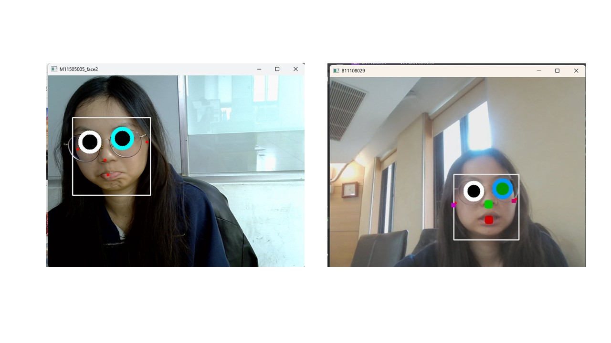

AI05X
人臉偵測與五官定位繪製
用 MediaPipe 即時偵測人臉，標出五官位置並做出卡通眼睛效果。
功能簡介
本作品透過 MediaPipe 的 FaceDetection 模組，實作即時臉部偵測與定位。初步畫出人臉框架後，進一步延伸以繪製「左右眼」、「鼻尖」、「嘴巴」、「雙耳」等五官位置，達成基礎視覺互動特效。
成果展示

程式碼片段
AI05X｜臉部特徵視覺化 + 卡通眼睛效果
import cv2
import mediapipe as mp
face_detection = mp.solutions.face_detection.FaceDetection(model_selection=0, min_detection_confidence=0.5)
cap = cv2.VideoCapture(0)
while cap.isOpened():
success, image = cap.read()
h, w = image.shape[:2]
imgrgb = cv2.cvtColor(image, cv2.COLOR_BGR2RGB)
results = face_detection.process(imgrgb)
if results.detections:
for detection in results.detections:
mp.solutions.drawing_utils.draw_detection(image, detection)
s = detection.location_data.relative_bounding_box
eye = int(s.width * w * 0.1)
keypoints = detection.location_data.relative_keypoints
ax, ay = int(keypoints[0].x * w), int(keypoints[0].y * h) # left eye
bx, by = int(keypoints[1].x * w), int(keypoints[1].y * h) # right eye
# Draw white eyeballs
cv2.circle(image, (ax, ay), eye + 10, (255, 255, 255), -1)
cv2.circle(image, (bx, by), eye + 10, (255, 255, 255), -1)
# Draw black pupils
cv2.circle(image, (ax, ay), eye, (0, 0, 0), -1)
cv2.circle(image, (bx, by), eye, (0, 0, 0), -1)
# Draw other keypoints
cx, cy = int(keypoints[2].x * w), int(keypoints[2].y * h) # nose tip
dx, dy = int(keypoints[3].x * w), int(keypoints[3].y * h) # mouth
ex, ey = int(keypoints[4].x * w), int(keypoints[4].y * h) # left ear
fx, fy = int(keypoints[5].x * w), int(keypoints[5].y * h) # right ear
cv2.circle(image, (cx, cy), 5, (0, 255, 0), -1) # nose tip
cv2.circle(image, (dx, dy), 5, (0, 0, 255), -1) # mouth
cv2.circle(image, (ex, ey), 5, (255, 0, 255), -1) # left ear
cv2.circle(image, (fx, fy), 5, (255, 0, 255), -1) # right ear
cv2.imshow('M11505005_face2', image)
if cv2.waitKey(5) & 0xFF == 27:
break
cap.release()
cv2.destroyAllWindows()